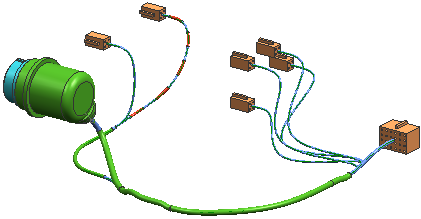

In this activity you will edit the type and length of overstock on a routing segment.

Launch the Edit overstock activity.
For additional information, see the following:
Use the Command Finder to search for Overstock.